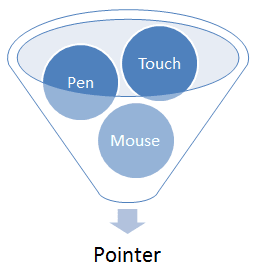

W3C 勧告である `PointerEvents$r は、［
~mouse, ~pen, ~touchscreen, 等々を含む装置
］からの［
~hardware非依存の~pointer入力
］を取扱うための~eventと関係する各種~interfaceについて述べている。
この仕様は、その勧告に見出される特色機能を拡張する／改変するものである。
また、既存の，~mouseを~~念頭に書かれた内容との互換性のため、他の型の~pointer装置による~eventから`~mouse~event$の発火-への対応付けについても述べる。
◎
The features in this specification extend or modify those found in [PointerEvents], a W3C Recomendation that describes events and related interfaces for handling hardware agnostic pointer input from devices including a mouse, pen, touchscreen, etc. For compatibility with existing mouse based content, this specification also describes a mapping to fire [DOM-LEVEL-3-EVENTS] Mouse Events for other pointer device types.
この文書は
Pointer Events Working Group
により編集者草案として~~発行されました。
コメントがあれば、
public-pointer-events@w3.org
(
subscribe,
archived
)
宛まで送られるよう願います。
◎
This document was published by the Pointer Events Working Group as an Editor's Draft. If you wish to make comments regarding this document, please send them to public-pointer-events@w3.org (subscribe, archives). All comments are welcome.
1. 序論
~INFORMATIVE
今日の殆どの `HTML5$r 内容は、~mouse入力~向けに利用され／設計されている。
入力を~custom方式で取扱う~codeは、概して `~mouse~event$向けに書かれている。
しかしながら，今日のより新たな~computing機器は、~touchscreen, ~pen入力, 等々も含む，他の形による入力も統合している。
これらの入力~形の各々に対し，それを取扱うための~event型が個々に提案されてきている。
しかしながら，そのような~approachでは、新たな型の入力に対する~supportが追加される度に，不必要な~logicの重複や, ~eventの取扱いにおける~overheadも招かれ易くなる。
これはまた、内容が ある型の装置のみを念頭に書かれるときにも，互換性の問題を生じさせ易い。
加えて、~mouse用に書かれている既存の内容との互換性のため、殆どの`~UA$は，どの型の入力に対しても`~mouse~event$を発火する。
このため、`~mouse~event$が［
実際の~mouse装置を表現している
］のか, ［
別の型の入力~装置から，互換性のために生産されたもの
］なのか，多義的になり、双方の型の装置に対応する~codeを書くのも難しくなっている。
◎
Today, most [HTML5] content is used with and/or designed for mouse input. Those that handle input in a custom manner typically code to [DOM-LEVEL-3-EVENTS] Mouse Events. Newer computing devices today, however, incorporate other forms of input, including touchscreens, pen input, etc. Event types have been proposed for handling each of these forms of input individually. However, that approach often incurs unnecessary duplication of logic and event handling overhead when adding support for a new input type. This often creates a compatibility problem when content is written with only one device type in mind. Additionally, for compatibility with existing mouse-based content, most user agents fire Mouse Events for all input types. This makes it ambiguous whether a Mouse Event represents an actual mouse device or is being produced from another input type for compatibility, which makes it hard to code to both device types simultaneously.
複数の入力~型に対応する~codeを書く手間を減らすため，および
上に述べた`~mouse~event$の多義性に~~対処し易くするため、この仕様は，`~pointer$と呼ばれる より抽象的な入力~形を定義する。
［
~mouse~cursor, ~pen, ~touch（複touchも含む）, その他
］の~pointing装置により ~screen上に入力される どの接触~点も，~pointerになり得る。
この~modelにより、利用者~側の~hardwareに関わらず，~siteや~appを上手く働くように書くことは、より容易くなる。
装置~特有の取扱いが欲される局面においては、この仕様は，当の~eventを生産した装置の型を検分するための属性も定義する。
その首~目標は、［
装置に依らない~pointer入力に対応する著作は より容易くする
］一方で，［
利用者体験の向上に必要とされる所では 装置~特有の取扱いのみも許容する
］ような、一式の ~event＆~interface を提供することである。
◎
To reduce the cost of coding to multiple input types and also to help with the above described ambiguity with Mouse Events, this specifications defines a more abstract form of input, called a pointer. A pointer can be any point of contact on the screen made by a mouse cursor, pen, touch (including multi-touch), or other pointing input device. This model makes it easier to write sites and applications that work well no matter what hardware the user has. For scenarios when device-specific handling is desired, this specification also defines properties for inspecting the device type which produced the event. The primary goal is to provide a single set of events and interfaces that allow for easier authoring for cross-device pointer input while still allowing for device-specific handling only when necessary for an augmented experience.
追加の~~重要な目標は、~UAが，~script実行を阻むことなく, 既定の~touch動作（~scrollingなど）を取扱えるように、複thread化することも可能化することである。
◎
An additional key goal is to enable multi-threaded user agents to handle default touch actions, such as scrolling, without blocking on script execution.
注記：
この仕様は、種々の~pointer入力に対する 統一された~event~modelを定義する。
~keyboardに類する~UIなど，他の形の入力は、この~modelの~~対象外である（具体例として、~touchscreenのみの装置~上で稼働中の~screenreaderや類似する支援的~技術
— 可focusな［
~controlや要素
］を通して 利用者による逐次的な~navigationを可能にするような）。
その種の~UIに呼応して~pointer~eventを生成する~UAもあるかもしれないが、それについては，この仕様の~~対象外である。
◎
While this specification defines a unified event model for a variety pointer inputs, this model does not cover other forms of input such as keyboards or keyboard-like interfaces (for instance, a screenreader or similar assistive technology running on a touchscreen-only device, which allows users sequential navigation through focusable controls and elements). While user agents might choose to also generate pointer events in response to these interfaces, this scenario is not covered in this specification.
注記：
作者には、まず第一に，すべての形の入力に対し、
`focus$et, `blur$et, `click$et
などの高次の~eventで応答することで，等価な機能性を提供することが奨励される。
しかしながら、低次の~event（`~pointer~event$など）を利用するときは、すべての型の入力に対する~supportを確保することが奨励される。
~keyboardに類する~UIの事例においては、これには，~keyboard~eventに対する明示的な取扱いの追加を要することもある。
詳細は、
WCAG 2.0 指針 2.1
見よ。
◎
In the first instance, authors are encouraged to provide equivalent functionality for all forms of input by responding to high-level events such as focus, blur and click. However, when using low-level events (such as Pointer Events), authors are encouraged to ensure that all types of input are supported. In the case of keyboards and keyboard-like interfaces, this might require the addition of explicit keyboard event handling. See WCAG 2.0 Guideline 2.1 for further details.

~pointerは、~screen上の特定の座標（または座標の集合）を標的に捉えられる入力~装置の，~hardware非依存の表現である。
◎
A pointer is a hardware agnostic representation of input devices that can target a specific coordinate (or set of coordinates) on a screen.
汎用~pointer入力を取扱うための~eventは、
~mouseに対するものとよく似る：
`pointerdown$et,
`pointermove$et,
`pointerup$et,
`pointerover$et,
`pointerout$et,
等々。
これにより、内容を，各種`~mouse~event$から`~pointer~event$へ移行するのも容易になる。
`~pointer~event$は、各種`~mouse~event$に在する通例の属性すべて（
~client座標, 標的~要素, ~button状態, 等々
）を提供し、加えて，他の形の入力
— 押圧（ pressure ）, `接触~幾何$（ contact geometry ）, 傾き（ tilt ）, 等々 —
のための新たな属性も提供する。
作者は、`~pointer~event$の~codeを，異なる【装置】型の入力~間で同じ~logicを共有するように書くことが容易になり、利用者体験の~~向上に必要とされる所のみ，特定0の型の入力を~custom化できる。
◎
The events for handling generic pointer input look a lot like those for mouse: pointerdown, pointermove, pointerup, pointerover, pointerout, etc. This facilitates easy content migration from Mouse Events to Pointer Events. Pointer Events provide all the usual properties present in Mouse Events (client coordinates, target element, button states, etc.) in addition to new properties for other forms of input: pressure, contact geometry, tilt, etc. So authors can easily code to Pointer Events to share logic between different input types where it makes sense, and customize for a particular type of input only where necessary to get the best experience.
様々な入力~装置が`~pointer~event$の源になり得るが、`~pointer~event$が，他の［
何らかの装置~特有の~eventの集合（例： 各種 `~mouse~event$, ~touch~event, 等々）
］に属する~eventに伴って生成されるものとして定義されることはない。
この仕様は、他の装置~特有の~eventの~supportは，要求しない。
そうすることも可能0であり，互換性のために奨励されるが。
~UAは、他のどの装置~eventも~supportすることなく，~pointer~eventを~supportできる。
［
~mouse特有の~event用に書かれた内容
］との互換性のため、この仕様は，［
~mouse以外の装置による~pointer入力に基づいて，`互換性~mouse~event$を生成する
］ための方法も述べる。
◎
While Pointer Events are sourced from a variety of input devices, they are not defined as being generated from some other set of device-specific events. While possible and encouraged for compatibility, this spec does not require other device-specific events be supported (e.g. mouse events, touch events, etc.). A user agent could support pointer events without supporting any other device events. For compatibility with content written to mouse-specific events, this specification does provide an optional section describing how to generate compatibility mouse events based on pointer input from devices other than a mouse.
この仕様は、［
`~pointer~event$と
~touch~event
の両者とも~supportする~UA
］に期待される挙動について，何も~~述べない。
これら二つの仕様の関係性についての更なる情報は、
Touch Events Community Group
を見よ。
◎
This specification does not provide any advice on the expected behavior of user agents that support both Pointer Events and Touch Events. For more information on the relationship between these two specifications, see the Touch Events Community Group.
<style>
/*
`~touchに対する既定の挙動$（~pan-zoomなど）を不能化して、
`canvas^e 要素~上のすべての~eventを，~appに仕向ける。
◎
Disable intrinsic user agent touch behaviors (such as panning or zooming) so that all events on the canvas element are given to the application instead.
*/
canvas {
`touch-action$p: none;
}
</style>
<canvas
id="drawSurface"
width="500px" height="500px"
style="border:1px solid black;"
></canvas>
<script type='text/javascript'>
var %canvas = document.getElementById("drawSurface"),
%context = %canvas.getContext("2d");
if (window.PointerEvent) {
%canvas.addEventListener("pointermove", paint, false);
if(window.navigator.maxTouchPoints > 1) {
/*
~UAと~hardwareは複touchを~supportする
◎
User agent and hardware support multi-touch
*/
}
}
else {
/*
`~pointer~event$を~supportしない~UAに対する~fallback
◎
Provide fallback for user agents that do not support Pointer Events
*/
%canvas.addEventListener("mousemove", paint, false);
}
function paint(%event) {
if(%event.buttons > 0)
%context.fillRect(%event.clientX, %event.clientY, 5, 5);
}
</script>
例 2：
利用者による入力を検知する例：
◎
Detecting the type of input from a user
window.addEventListener("pointerdown", %detectInputType, false);
function detectInputType(%event) {
switch(%event.pointerType) {
case "mouse":
/*
~mouse入力が検知された
◎
mouse input detected
*/
break;
case "pen":
/*
~pen／~stylus入力が検知された
◎
pen/stylus input detected
*/
break;
case "touch":
/*
~touch入力が検知された
◎
touch input detected
*/
break;
case "":
/*
空~文字列は、~UAが検知できない装置を意味する
*/
break;
default:
/*
~UA特有の~custom型
◎
pointerType is empty (could not be detected) or UA-specific custom type
*/
}
}
例 3：
要素~sizeを`接触~幾何$に合わせる例：
◎
Resizing an element to match the contact geometry
例 4：
~scriptから`非trusted$~pointer~eventを発火する例：
◎
Firing an untrusted pointer event from script
var %event = new PointerEvent("pointerover", {
bubbles: true,
cancelable: true,
pointerId: 42,
pointerType: "pen",
clientX: 300,
clientY: 500
});
eventTarget.dispatchEvent(%event);
4. 用語集
~INFORMATIVE
~pointerの~buttonが`作動状態@にある
`~pointer~event$の `buttons$m 属性が非~zero値をとるための条件：
~mouseに対しては、装置にて何らかの~buttonが押下されているとき。
~touchに対しては、`~digitizer$との物理的~接触があるとき。
~penに対しては、~penによる`~digitizer$との物理的~接触があるとき。
◎
The condition when a pointer has a non-zero value for the buttons property. For mouse, this is when the device has at least one button depressed. For touch, this is when there is physical contact with the digitizer. For pen, this is when the pen has physical contact with the digitizer.
`作動中の~pointer@, または 単に~pointer†
~touch接触, ~pen~stylus, ~mouse~cursor,
その他，~eventを生産し得るような~pointer。
所与の~pointer（ `pointerId$m により一意に識別される）が，文書の中で追加の~eventを生産し得るならば、その~pointerは，依然として作動中と見なされる。
例えば：
◎
Any touch contact, pen stylus, mouse cursor, or other pointer that can produce events. If it is possible for a given pointer (identified by a unique pointerId) to produce additional events within the document, then that pointer is still considered active. Examples:
機器に接続された~mouseは、常に作動中と見なされる。
◎
A mouse connected to the device is always active.
~screen上の~touch接触は、作動中と見なされる。
◎
A touch contact on the screen is considered active.
~touch接触／~pen~stylus
が`~digitizer$の範囲を超えるように持上げられた場合、それは最早~作動中とは見なされない。
◎
If a touch contact or pen stylus is lifted beyond the range of the digitizer, then it is no longer considered active.
注記：
~platformによっては、`作動中の~pointer$の集合には，~UAを標的にしていない（例： 他の~appを標的にしている）ものも含め，装置へのすべての~pointer入力も含まれる。
◎
On some platforms, the set of active pointers includes all pointer input to the device, including any that are not targeted at the user agent (e.g. those targeted at other applications).
各 `作動中の~pointer$には、少なくとも`~top-level閲覧文脈$ `HTML5$r において，同じ識別子（ `pointerId$m ）が付与されるべきである。
◎
Each active pointer should have the same id in the scope of at least the top-level browsing context (as defined by [HTML5]).
`取消された@~event （ canceled event ）
`UIEVENTS$r, `HTML5$r の定義に従って，`既定~動作$が防止された~event
—
`preventDefault()$m により ／
~event~handlerから ~F が返されたため ／
他の手段により。
◎
An event whose default action was prevented by means of preventDefault(), returning false in an event handler, or other means as defined by [DOM-LEVEL-3-EVENTS] and [HTML5].
`接触~幾何@（ contact geometry ）
`~digitizer$上で入力された~~地点を囲う矩形域（最も共通的なものは，~touch ）。
これは概して、~pointer入力の分解能が単独の画素より粗い装置を指す
【指先の大きさなど】
。
この~dataを全く報告しない装置もある。
◎
The bounding box of an input (most commonly, touch) on a digitizer. This typically refers to devices with coarser pointer input resolution than a single pixel. Some devices do not report this data at all.
`~digitizer@ （ digitizer ）
物理的面に接触-あるいは近接している入力を検知できる型の入力~感知器。
最も共通的なものは、~touch接触や~pen~stylusからの入力を感知する物理的面である。
◎
A type of input sensing device in which a surface can detect input which is in contact and/or in close proximity. Most commonly, this is the surface that senses input from the touch contact or a pen stylus.
`接触判定@ （ hit test ）
~UAが `~pointer~event$に対する標的~要素を決定する処理-。
これは概して、~pointerの所在, および
~screen媒体~上の文書~内の要素たちの視覚的~layoutを考慮して決定される。
接触判定の仕組みは、この仕様の視野外である。
◎
The process by which a user agent determines a target element for a pointer event. Typically, this is determined by considering the pointer's location and also the visual layout of elements in a document on screen media.
`~pointer@ （ pointer ）
~screen上の特定の座標（または座標の集合）を標的に捉えられる入力~装置
— ~mouse, ~pen, ~touch接触 など —
の，~hardware非依存の表現。
◎
A hardware agnostic representation of input devices that can target a specific coordinate (or set of coordinates) on a screen, such as a mouse, pen, or touch contact.
【
上に述べたように、この語は，`作動中の~pointer$を意味する場合もある。
】
`~UA@ （ user agent ）
~browserや内容~著作~toolなど，通常は~client~machine上で稼働中の~programであって、利用者の利益を代表して，内容を［
検索取得- ／ 解釈- ／ 実行- ／ 呈示- ／ 作成-
］するものとして動作するもの。
◎
A program, such as a browser or content authoring tool, normally running on a client machine, which acts on a user's behalf in retrieving, interpreting, executing, presenting, or creating content.
`~taskを待入する@ （ queue a task ）
`HTML5$r にて定義される
— 関連する~event~loopの~event~task待行列に~taskを追加すること。
【この用語は利用されていない】
◎
Adding the task to events task queue of the relevant event loop, as defined in [HTML5].
~eventを生じさせた~pointerを一意に識別する識別子。
この識別子は、その時点で，`~top-level閲覧文脈$ `HTML5$r において`作動中の~pointer$すべての中で一意で~MUST。
~UAは、必要に応じて，以前に`作動中$であった~pointerによる使われなくなった値を `pointerId$m 値に~~再利用して~MAY。
◎
A unique identifier for the pointer causing the event. This identifier MUST be unique from all other active pointers in the top-level browsing context (as defined by [HTML5]) at the time. A user agent MAY recycle previously retired values for pointerId from previous active pointers, if necessary.
注記：
`pointerId$m の選定~algoは、実装~特有である。
したがって作者は、この値を，上の意味で一意であること以外の意味を持つものとは見做せない。
例として、値が単調増加することは保証されない。
◎
The pointerId selection algorithm is implementation specific. Therefore authors cannot assume values convey any particular meaning other than an identifier for the pointer that is unique from all other active pointers. As an example, values are not guaranteed to be monotonically increasing.
double `width@m
double `height@m
順に、~pointerの`接触~幾何$の横幅, 縦幅（ X, Y 軸~上の大きさ）を表す。
その~~単位は CSS ~pixel（ `CSS21$r ）による。
この値は、所与の~pointerに対する各~eventごとに更新されても~MAY。
［
概して`接触~幾何$を欠く入力（ traditional ~mouseなど） ／
実際の幾何が~hardwareにより検知されない入力
］に対しては、~UAは，既定の値として 1 を返さ~MUST。
◎
The width (magnitude on the X axis), in CSS pixels (see [CSS21]), of the contact geometry of the pointer. This value MAY be updated on each event for a given pointer. For inputs that typically lack contact geometry (such as a traditional mouse), and in cases where the actual geometry of the input is not detected by the hardware, the user agent MUST return a default value of 1.
◎
The height (magnitude on the Y axis), in CSS pixels (see [CSS21]), of the contact geometry of the pointer. This value MAY be updated on each event for a given pointer. For inputs that typically lack contact geometry (such as a traditional mouse), and in cases where the actual geometry of the input is not detected by the hardware, the user agent MUST return a default value of 1.
float `pressure@m
~pointer入力による，範囲 0 〜 1 に正規化された押圧
—
値［
0 ／ 1
］は、~hardwareが検知できる［
最小／最大
］の押圧を表現する。
押圧を~supportしない~hardwareに対する値は、［
~buttonが`作動状態$にあるなら 0.5 ／
~ELSE_ 0
］にされ~MUST。
◎
The normalized pressure of the pointer input in the range of [0,1], where 0 and 1 represent the minimum and maximum pressure the hardware is capable of detecting, respectively. For hardware that does not support pressure, the value MUST be 0.5 when in the active buttons state and 0 otherwise.
For hardware that does not support pressure, including but not limited to mouse,
【
標的~要素に対する座標系~変換（回転など）が X, Y 軸の解釈に影響し得るのか,
どう影響するのかについては、この仕様には述べられていない。
】
傾きを報告しない装置に対する値は、 0 で~MUST。
◎
The plane angle (in degrees, in the range of [-90,90]) between the Y-Z plane and the plane containing both the transducer (e.g. pen stylus) axis and the Y axis. A positive tiltX is to the right. tiltX can be used along with tiltY to represent the tilt away from the normal of a transducer with the digitizer. For devices that do not report tilt, the value MUST be 0.
【†
図が紛らわしいが、下の図の Y 軸の反対~方向。
GUI の文脈にて通例的な Y 軸の向き（ ~screenの下方向が正の向き）においては、正~方向。
】
傾きを報告しない装置に対する値は、 0 で~MUST。
◎
The plane angle (in degrees, in the range of [-90,90]) between the X-Z plane and the plane containing both the transducer (e.g. pen stylus) axis and the X axis. A positive tiltY is towards the user. tiltY can be used along with tiltX to represent the tilt away from the normal of a transducer with the digitizer. For devices that do not report tilt, the value MUST be 0.
負の `tiltY$m 。
◎
Negative tiltY.
DOMString `pointerType@m
~eventを生じさせた装置の型（
~mouse,
~pen,
~touch,
等々）を指示する。
［
~mouse ／
~pen~stylus ／
~touch入力~装置
］に対し`~pointer~eventを発火-$する~UAは、
その `pointerType$m の値を次の表に則って~~初期化し~MUST：
◎
Indicates the device type that caused the event (mouse, pen, touch, etc.). If a user agent is to fire a pointer event for a mouse, pen stylus, or touch input device, then the value of pointerType MUST be according to the following table:
~pointer装置の型◎Pointer Device Type
`pointerType$m 値◎pointerType Value
~mouse◎Mouse
`mouse^l
~pen~stylus◎Pen Stylus
`pen^l
~touch接触◎Touch Contact
`touch^l
~UAが検知できない型の装置に対する値は、空~文字列にされ~MUST。
上に挙げたもの以外の，~UAが~supportする型の~pointer装置に対する
`pointerType$m 値は、
異なる型の装置~間で名前が競合しないように，~vendor接頭辞が~~付与される~SHOULDである。
将来の仕様は、他の型の装置に対する規範的な値を追加し得る。
◎
If the device type cannot be detected by the user agent, then the value MUST be an empty string. If a user agent supports pointer device types other than those listed above, the value of pointerType SHOULD be vendor prefixed to avoid conflicting names for different types of devices. Future specifications MAY provide additional normative values for other device types.
注記：
例 2
に、 `pointerType$m の基本的な用例がある。
開発者は、何らかの形で既定の取扱いを含めるべきであることに注意
— 自前の~custom `pointerType$m 値を実装している~UAや,
`pointerType$m が単に空~文字列である状況0に対応するために。
◎
See Example 2 for a basic demonstration of how the pointerType can be used. Also note that developers should include some form of default handling to cover user agents that may have implemented their own custom pointerType values and for situations where pointerType is simply an empty string.
~pointerがこの~pointer型の`首~pointer$を表現するかどうかを指示する。
◎
Indicates if the pointer represents the primary pointer of this pointer type.
`PointerEventInit$I 辞書の各~memberは、
`PointerEvent$I ~objectの同じ名前の属性を初期化する。
◎
Dictionary PointerEventInit Members
◎
long pointerId = 0
◎
Initializes the pointerId property of the PointerEvent object.
◎
double width = 1
◎
Initializes the width property of the PointerEvent object.
◎
double height = 1
◎
Initializes the height property of the PointerEvent object.
◎
float pressure = 0
◎
Initializes the pressure property of the PointerEvent object.
◎
long tiltX = 0
◎
Initializes the tiltX property of the PointerEvent object.
◎
long tiltY = 0
◎
Initializes the tiltY property of the PointerEvent object.
◎
DOMString pointerType = ""
◎
Initializes the pointerType property of the PointerEvent object.
◎
boolean isPrimary = false
◎
Initializes the isPrimary property of the PointerEvent object.
`PointerEventInit^I 辞書は、
`PointerEvent$I ~interfaceの構築子に，`非trusted$（合成の）`~pointer~event$を構築する仕組みを提供する。
それは `UIEVENTS$r にて定義される `MouseEventInit$I 辞書を継承する。
~eventを構築する手続きは、 `DOM4$r にて定義される。
例 4
に、`非trusted$ `~pointer~eventを発火-$する用例がある。
◎
The PointerEventInit dictionary is used by the PointerEvent interface's constructor to provide a mechanism by which to construct untrusted (synthetic) pointer events. It inherits from the MouseEventInit dictionary defined in [DOM-LEVEL-3-EVENTS]. The steps for constructing an event are defined in [DOM4]. See the examples for sample code demonstrating how to fire an untrusted pointer event.
注記：
`PointerEvent$I ~interfaceは、 `MouseEvent$I `UIEVENTS$r を継承し， `CSSOM-VIEW$r により拡張される。
◎
The PointerEvent interface inherits from MouseEvent, defined in [DOM-LEVEL-3-EVENTS] and extended by [CSSOM-VIEW].
5.1.1. ~button状態
5.1.1.1. ~buttonの追加押下げ操作0
~mouseや~penなどの一部の~pointer装置は、複数の~buttonを~supportする。
`~mouse~event$~model `UIEVENTS$r においては、どの~buttonが押されたときも，
`mousedown$et, `mouseup$et
~eventが生産される。
この~hardware相違点を より良く抽象化して，入力に対する装置に依らない著作を単純化するため、`~pointer~event$においては、
`~buttonの追加押下げ@
— ~pointer装置~上の別の~buttonがすでに押下されている間に
追加の~buttonを押下すること —
に対しては、
`pointerdown$et, `pointerup$et
~eventが重ねて発火されることはない†。
◎
Some pointer devices, such as mouse or pen, support multiple buttons. In the [DOM-LEVEL-3-EVENTS] Mouse Event model, each button press produces a mousedown and mouseup event. To better abstract this hardware difference and simplify cross-device input authoring, Pointer Events do not fire overlapping pointerdown and pointerup events for chorded button presses (depressing an additional button while another button on the pointer device is already depressed).
【†
~button A, B をこの順に押して，同じ順に離した場合、
`pointerup$et は，最後に B を離したときに呼応して発火される？
それとも A を離したときに発火される？
】
~buttonの追加押下げは、［
`button$m, `buttons$m
］属性の変化を検分すれば検知できる†。
これらの属性は
`MouseEvent$I ~interface `UIEVENTS$r
から継承されるが、意味論と値には，次~節~以下に要約される変更が加えられている。
◎
Instead, chorded button presses can be detected by inspecting changes to the button and buttons properties. The button and buttons properties are inherited from the [DOM-LEVEL-3-EVENTS] MouseEvent interface, but with a change in semantics and values, as outlined in the following sections.
注記：
［
`button^m ／ `buttons^m
］属性に対する改変が適用されるのは、~pointer~eventに限られる。
`互換性~mouse~event$に対する［
`button^m ／ `buttons^m
］の値は `UIEVENTS$r に従うべきである。
◎
The modifications to the button and buttons properties apply only to pointer events. For any compatibility mouse events the value of button and buttons should follow [DOM-LEVEL-3-EVENTS].
5.1.1.2. `button^m 属性
~pointer~eventにおける~button状態の（単なる `pointerdown$et, `pointerup$et 以上の）遷移を識別できるようにするため、 `button$m 属性は，状態~変化により~eventを発火させた装置~buttonを指示する。
◎
To identify button state transitions in any pointer event (and not just pointerdown and pointerup), the button property indicates the device button whose state-change fired the event.
装置の~button状態◎Device Button State
`button^m
前回の~eventから，どの~buttonも, どの~touch／~pen接触も変化していない
◎
Neither buttons nor touch/pen contact changed since last event
−1
~mouseの左~buttonが押されている ／
~touch接触がある ／
接触している~penは どの修飾~buttonも押されていない
◎
Left Mouse, Touch Contact, Pen contact (with no modifier buttons pressed)
0
~mouseの中央~buttonが押されている
◎
Middle Mouse
1
~mouseの右~buttonが押されている ／
接触している~penの~barrel~buttonが押されている
◎
Right Mouse, Pen contact with barrel button pressed
2
~mouseの x1（ back ）~buttonが押されている
◎
X1 (back) Mouse
`buttons$m 属性は、装置の個々の~buttonの現在の状態を~bitmaskとして与える（ `MouseEvent$I におけるそれと同じだが、とり得る値は拡張0されている）。
◎
The buttons property gives the current state of the device buttons as a bitmask (same as in MouseEvent, but with an expanded set of possible values).
装置の現在の~button状態◎Current state of device buttons
`buttons^m
~mouseは どの~buttonも押されずに動いている
◎
Mouse move with no buttons pressed
0
~mouseの左~buttonが押されている ／
~touch接触がある ／
接触している~penは どの修飾~buttonも押されていない
◎
Left Mouse, Touch Contact, Pen contact (with no modifier buttons pressed)
1
~mouseの中央~buttonが押されている
◎
Middle Mouse
4
~mouseの右~buttonが押されている ／
接触している~penの~barrel~buttonが押されている
◎
Right Mouse, Pen contact with barrel button pressed
2
~mouseの x1（ back ）~buttonが押されている
◎
X1 (back) Mouse
接触している~penの~eraser~buttonが押されている
◎
Pen contact with eraser button pressed
32
5.1.2. 首~pointer
複pointer装置（例：複touch）
【複数の装置ではなく，複数の同時的~接触を~supportする~pointer装置】
に対しては、
`isPrimary$m 属性が，
首~pointer
— 各~pointer【装置】型に対する`作動中の~pointer$の集合の中で，主導的とされる~pointer —
を識別するために利用される。
◎
In a multi-pointer (e.g. multi-touch) scenario, the isPrimary property is used to identify a master pointer amongst the set of active pointers for each pointer type.
どの時点でも，首~pointerは，各~pointer型に対し高々一つまでである。
◎
At any given time, there can only ever be at most one primary pointer for each pointer type.
特定0の~pointer型に対し最初に作動中になる~pointer（例えば 複touchによる操作0なら，手指による~screenへの最初の~touch）が、その~pointer型の首~pointerになる。
◎
The first pointer to become active for a particular pointer type (e.g. the first finger to touch the screen in a multi-touch interaction) becomes the primary pointer for that pointer type.
首~pointerのみが`互換性~mouse~event$を生産することになる。
`首~pointer$が複数ある事例では、それぞれの~pointerが，`互換性~mouse~event$を生産することになる。
◎
Only a primary pointer will produce compatibility mouse events. In the case where there are multiple primary pointers, these pointers will all produce compatibility mouse events.
注記：
作者は、欲するなら，非 首~pointerを無視することで 非 複pointerによる操作0を得られる（しかしながら，下の
複数の首~pointer
についての注記を見よ）。
◎
Authors who desire single-pointer interaction can achieve this by ignoring non-primary pointers (however, see the note below on multiple primary pointers).
注記：
複数の型の~pointer装置が同時的に利用されている場合、それぞれの~pointer（各 `pointerType$m ごとに一つ）が首と見なされる。
例えば、同時に動いた ~touch接触と~mouse~cursorは，両者とも首と見なされる~pointerを生産することになる。
◎
When two or more pointer device types are being used concurrently, multiple pointers (one for each pointerType) are considered primary. For example, a touch contact and a mouse cursor moved simultaneously will produce pointers that are both considered primary.
注記：
~UAが、どの~pointerも`首~pointer$とされていない下で，~pointer~eventを発火する場合もあり得る。
具体的には、複touchの様な特定0の型の 作動中の~pointerが複数あって，首~pointerが除去された場合（~screenから離されたなど）、首~pointer~eventは生じない。
また、［
`首~pointer$が，（~UAを標的にしていないものも含め）装置~上で`作動中の$すべての~pointerを利用して決定される
］ような~platformにおいては、［
最初の~touch操作0は ~UAの外側を標的にしていて，（複touchによる）二番目の~touch操作0は ~UAの内側を標的にしている
］場合、~UAは，二番目の接触に対し、
`isPrimary$m が ~F にされた`~pointer~eventを発火-$し得る。
◎
In some cases, it is possible for the user agent to fire pointer events in which no pointer is marked as a primary pointer. For instance, when there are multiple active pointers of a particular type like multi-touch and the primary pointer is removed (e.g. it leaves the screen), there will be no primary pointer events. Also on the platforms where the primary pointer is determined using all active pointers on the device (including those targeted at an application other than the user agent), if the first touch interaction is targeted outside the user agent and a secondary (multi-touch) touch interaction is targeted inside the user agent, then the user agent may fire pointer events for the second contact with a value of false for isPrimary.
注記：
現在の OS や~UAは、通例的に複数の~mouseによる入力の概念を備えていない。
複数の~mouse装置が在する場合（具体的には、~trackpadと外部~mouseを備える~laptopなど）、一般に，それら一まとめに単独の装置に扱われる
— どの装置による移動も，単独の~mouse~pointerの移動に翻訳され、異なる~mouse装置で押される~buttonは~~区別されない。
この理由から、~mouse~pointerは，通例的に一つだけあって，その~pointerが首になることになる。
【
したがって、二つの~mouseがあって，二つの左~buttonが順に押されてから, 順に離されたとき，二番目に押されたときと, 最初に離されたときは，無視されることになるであろう。
】【
他の型について同じ型の~pointer装置が複数ある場合については，この仕様には言及されていない。
】
◎
Current operating systems and user agents don't usually have a concept of multiple mouse inputs. When more than one mouse device is present (for instance, on a laptop with both a trackpad and an external mouse), all mouse devices are generally treated as a single device - movements on any of the devices are translated to movement of a single mouse pointer, and there is no distinction between button presses on different mouse devices. For this reason, there will usually only be a single mouse pointer, and that pointer will be primary.
5.2. 各種 ~pointer~event型
5.2.1. `PointerEvent^I ~interfaceを利用する~eventの発火
名前 %e の
`~pointer~eventを発火-@
するとは、
`DOM4$r による定義に従って，以下のようにされた名前 %e の~eventを`発火する$ことを意味する：
◎
To fire a pointer event name e means to fire an event named e as defined in [DOM4] with an event using the PointerEvent interface whose attributes are set as defined in PointerEvent Interface.
次に挙げる~eventに対しては、
`bubbles$m 属性は ~T に初期化する：
◎
Initialize the bubbles attribute for the event to true if the event name is
`pointerdown$et
`pointerup$et
`pointercancel$et
`pointermove$et
`pointerover$et
`pointerout$et
`gotpointercapture$et
`lostpointercapture$et
次に挙げる~eventに対しては、
`cancelable$m 属性は ~T に初期化する：
◎
Initialize the cancelable attribute for the event to true if the event name is
`pointerdown$et
`pointerup$et
`pointermove$et
`pointerover$et
`pointerout$et
~eventが発火される標的~object（すなわち， `target$m 属性）は、以下のように決定される：
◎
The target object at which the event is fired is determined as follows:
~pointerの`捕捉標的$ ~NEQ ~NULL ならば、その標的。
この場合の~eventの `relatedTarget$m 属性は~NULLに初期化する。
◎
If the pointer capture target override has been set for the pointer,
◎
Set the relatedTarget attribute of the event to null.
◎
Fire the event to the pointer capture target override object.
他の場合、通常の`~pointing先$。
◎
Otherwise, fire the event to the object returned by normal hit test mechanisms (out of scope for this specification).
~pending~pointer捕捉を処理する
~UAは、［
`gotpointercapture$et, `lostpointercapture$et
］以外の`~pointer~eventを発火-$するときは，その前に次の手続きを走らせ~MUST：
◎
Whenever a user agent is to fire a Pointer Event that is not gotpointercapture or lostpointercapture, it must first run these steps:
%~pointer ~LET 当の~eventを生じさせた`作動中の~pointer$
◎
↓
%~pointing先 ~LET %~pointer の`~pointing先$
◎
↓
`古い捕捉~標的^V ~LET %~pointer の`捕捉標的$
◎
↓
`新たな捕捉~標的^V ~LET %~pointer の`~pending捕捉標的$
◎
↓
~IF［
`古い捕捉~標的^V ~NEQ `新たな捕捉~標的^V
］：
◎
↓
~IF［
`古い捕捉~標的^V ~NEQ ~NULL
］：
◎
↓
`古い捕捉~標的^V に向けて，名前 `lostpointercapture$et の`~pointer~eventを発火-$する
◎
If the pointer capture target override for this pointer is set and is not equal to the pending pointer capture target override, then fire a pointer event named lostpointercapture at the pointer capture target override node.
~IF［
`新たな捕捉~標的^V ~EQ ~NULL
］~AND［
`古い捕捉~標的^V ~NEQ %~pointing先
］
⇒
%~pointing先 に向けて，名前［
`pointerover$et, `pointerenter$et
］†の`~pointer~eventを発火-$する
◎
Further, if the pending pointer capture target override is not set and, the pointer capture target override is not equal to the hit test node for the pointer event which invoked this process, then fire a pointer event named pointerover and a pointer event named pointerenter at the hit test node.
`新たな捕捉~標的^V に向けて，名前 `gotpointercapture$et の`~pointer~eventを発火-$する
◎
If the pending pointer capture target override for this pointer is set and is not equal to the pointer capture target override, then fire a pointer event named gotpointercapture at the pending pointer capture target override.
~IF［
`古い捕捉~標的^V ~EQ ~NULL
］~AND［
`新たな捕捉~標的^V ~NEQ %~pointing先
］~AND［
%~pointing先 は［
`pointerover$et, `pointerenter$et
］~eventを受取った
］
⇒
%~pointing先 に向けて，名前［
`pointerout$et, `pointerleave$et
］の`~pointer~eventを発火-$する†
◎
Further, if the pointer capture target override is not set and, the pending pointer capture target override is not equal to the hit test node for the pointer event which invoked this process, and the hit test node has received pointerover and pointerenter events, then fire a pointer event named pointerout and a pointer event named pointerleave at the hit test node.
%~pointer の`捕捉標的$ ~SET `新たな捕捉~標的^V
◎
Set the pointer capture target override to the pending pointer capture target override, if set. Otherwise, clear the pointer capture target override.
5.2.2. 各種~pointer~eventの一覧
~INFORMATIVE
次の表に，この仕様にて定義される各種~event型を要約する：
◎
The following table provides a summary of the event types defined in this specification.
~event型◎Event Type
`同期$？◎Sync / Async
`浮上-$？◎Bubbles
`取消可否$◎Cancelable
`既定~動作$◎Default Action
`pointerover$et
あり
する
可
なし
◎
Varies: when the pointer is primary, all default actions of mouseover
`pointerenter$et
あり
しない
不可
なし
◎
Varies: when the pointer is primary, all default actions of mouseenter
`pointerdown$et
あり
する
可 (2)
`mousedown$et と同じ (1)
◎
Varies: when the pointer is primary, all default actions of the mousedown event Canceling this event also sets the PREVENT MOUSE EVENT flag for this pointerType, which prevents subsequent firing of certain compatibility mouse events.
`pointermove$et
あり
する
可
`mousemove$et と同じ (1)
◎
Varies: when the pointer is primary, all default actions of mousemove
`pointerup$et
あり
する
可
`mouseup$et と同じ (1)
◎
Varies: when the pointer is primary, all default actions of mouseup
`pointercancel$et
あり
する
不可
なし
`pointerout$et
あり
する
可
なし
◎
Varies: when the pointer is primary, all default actions of mouseout
`pointerleave$et
あり
しない
不可
なし
◎
Varies: when the pointer is primary, all default actions of mouseleave
`首~pointer$に対しては、（ `gotpointercapture$et, `lostpointercapture$et を例外として）これらの~eventからは，`互換性~mouse~event$も発火され得る。
◎
In the case of the primary pointer, these events (with the exception of gotpointercapture, and lostpointercapture) may also fire compatibility mouse events.
5.2.3. `pointerover^et ~event
~UAは、［
~pointerが~~操作されて，`~pointing先$が変化した
］とき，新たな`~pointing先$が要素であるならば、その要素に向けて，名前 `pointerover$et の`~pointer~eventを発火-$し~MUST。
この~eventは，［
`~hoverを~supportしない$装置により `pointerdown$et ~eventが発火される
］よりも先に発火され~MUST（ `pointerdown$et を見よ）。
◎
A user agent MUST fire a pointer event named pointerover when a pointing device is moved into the hit test boundaries of an element. A user agent MUST also fire this event prior to firing a pointerdown event for devices that do not support hover (see pointerdown).
◎
A user agent MUST fire a pointer event named pointerenter when a pointing device is moved into the hit test boundaries of an element or one of its descendants, including as a result of a pointerdown event from a device that does not support hover (see pointerdown). This event type is similar to pointerover, but differs in that it does not bubble.
注記：
［
この型の~event ,
`mouseenter$et ~event `UIEVENTS$r ,
CSS ~hover_ps 疑似類 `CSS21$r
］の間には類似性がある。
`pointerleave$et ~eventも見よ。
◎
There are similarities between this event type, the mouseenter event described in [DOM-LEVEL-3-EVENTS], and the CSS :hover pseudo-class described in [CSS21]. See also the pointerleave event.
5.2.5. `pointerdown^et ~event
~UAは、［
~pointerの~buttonが非`作動状態$から`作動状態$へ遷移した
］とき、`~pointing先$が要素であるならば，その要素に向けて
名前 `pointerdown$et の`~pointer~eventを発火-$し~MUST。
【この段落の他の内容は，作動状態の定義に委譲。】
◎
A user agent MUST fire a pointer event named pointerdown when a pointer enters the active buttons state. For mouse, this is when the device transitions from no buttons depressed to at least one button depressed. For touch, this is when physical contact is made with the digitizer. For pen, this is when the stylus makes physical contact with the digitizer.
注記：
~mouse（または他の複button~pointer装置）に対しては、これは［
`mousedown$et ／ `mouseup$et
が発火される状況と同じ状況で，常に
`pointerdown$et ／ `pointerup$et
が発火されるとは限らない
］ことを意味する。
`~buttonの追加押下げ$を見よ。
◎
For mouse (or other multi-button pointer devices), this means pointerdown and pointerup are not fired for all of the same circumstances as mousedown and mouseup. See chorded buttons for more information.
~UAは、`~hoverを~supportしない$入力~装置に対しては、
`pointerdown$et ~eventを配送するより先に，順に，名前［
`pointerover$et, `pointerenter$et
］の`~pointer~eventを発火-$し~MUST。
【~hoverを~supportする装置の~pointerが、~window外から瞬時に移動してきて，一瞬だけ静止した後，作動状態に遷移したときの挙動と同様になる。】
◎
For input devices that do not support hover, a user agent MUST also fire a pointer event named pointerover followed by a pointer event named pointerenter prior to dispatching the pointerdown event.
注記：
作者は、 `pointerdown$et ~eventを取消して（その `isPrimary$m 属性が ~T ならば），
ある種の`互換性~mouse~event$の発火を防止できる。
これは、~pointerの`~mouse~event防止~flag$を ~ON にする。
ただし、［
`mouseover$et ／ `mouseenter$et ／ `mouseout$et ／ `mouseleave$et
］~eventの発火は防止されないことに注意。
◎
Authors can prevent the firing of certain compatibility mouse events by canceling the pointerdown event (if the isPrimary property is true). This sets the PREVENT MOUSE EVENT FLAG on the pointer. Note, however, that this does not prevent the mouseover, mouseenter, mouseout, or mouseleave events from firing.
5.2.6. `pointermove^et ~event
~UAは、~pointerの座標が変化した, または［
~event~objectに反映されるような~pointerの状態~変化がある, かつ
その状況により 他の~pointer~eventは生産されない
］とき，その`~pointing先$に向けて，名前 `pointermove$et の`~pointer~eventを発火-$し~MUST。
この状態~変化には、~pointerの［
~button状態 ／ 押圧 ／ 傾き ／ `接触~幾何$（例： `width$m, `height$m ）
］が含まれる。
◎
A user agent MUST fire a pointer event named pointermove when a pointer changes coordinates. Additionally, when a pointer changes button state, pressure, tilt, or contact geometry (e.g. width and height) and the circumstances produce no other pointer events defined in this specification then a user agent MUST fire a pointer event named pointermove.
~UAは、［
~pointerの~buttonが`作動状態$から非`作動状態$へ遷移した
］とき、その~pointing先に向けて，名前 `pointerup$et の`~pointer~eventを発火-$し~MUST。
【この段落の他の内容は，作動状態の定義に委譲。】
◎
A user agent MUST fire a pointer event named pointerup when a pointer leaves the active buttons state. For mouse, this is when the device transitions from at least one button depressed to no buttons depressed. For touch, this is when physical contact is removed from the digitizer. For pen, this is when the pen is removed from physical contact with the digitizer.
`~hoverを~supportしない$入力~装置に対しては、~UAは，
`pointerup$et ~eventを配送した後に，［
順に，名前 `pointerout$et, `pointerleave$et の`~pointer~eventを発火-$
］し~MUST。
【~hoverを~supportする装置の~pointerが、非~作動状態に遷移して，一瞬だけ静止した後，瞬時に~window外へ移動したときの挙動と同様になる。】
◎
For input devices that do not support hover, a user agent MUST also fire a pointer event named pointerout followed by a pointer event named pointerleave after dispatching the pointerup event.
注記：
~mouse（または他の複button~pointer装置）に対しては、これは［
`mousedown$et ／ `mouseup$et
が発火される状況と同じ状況で，常に
`pointerdown$et ／ `pointerup$et
が発火されるとは限らない
］ことを意味する。
`~buttonの追加押下げ$を見よ。
◎
For mouse (or other multi-button pointer devices), this means pointerdown and pointerup are not fired for all of the same circumstances as mousedown and mouseup. See chorded buttons for more information.
5.2.8. `pointercancel^et ~event
~UAは、次の状況においては，名前 `pointercancel$et の`~pointer~eventを発火-$し~MUST：
◎
A user agent MUST fire a pointer event named pointercancel in the following circumstances:
~UAが、その~pointerは，それ以上~eventを生産し続ける見込みは低いと決定した場合（例えば ~hardware~eventにより — 下の注記を見よ）。
◎
The user agent has determined that a pointer is unlikely to continue to produce events (for example, because of a hardware event).
`pointerdown$et ~eventが発火された後に引き続いて、~pointerは，頁~表示域を操作1するために利用された（例： ~pan-zoom）。
◎
After having fired the pointerdown event, if the pointer is subsequently used to manipulate the page viewport (e.g. panning or zooming).
~UAは、 `pointercancel$et ~eventを発火した後に，［
順に，名前 `pointerout$et, `pointerleave$et の`~pointer~eventを発火-$
］し~MUST。
◎
After firing the pointercancel event, a user agent MUST also fire a pointer event named pointerout followed by firing a pointer event named pointerleave.
注記：
［
~UAが，~pointerがそれ以上~eventを生産し続ける見込みは低いと決定する
］であろう局面の例には、次が挙げられる：
◎
Examples of scenarios in which a user agent might determine that a pointer is unlikely to continue to produce events include:
~pointerが`作動中の$間に装置の~screen方位が変化した。
◎
A device's screen orientation is changed while a pointer is active.
利用者が、装置にて~supportされる数より大きい数の~pointerを同時に入力した。
◎
The user inputs a greater number of simultaneous pointers than is supported by the device.
~UAは、入力が不意のものと解釈した（例えば、 palm rejection†を~supportする~hardware）。
【†~digitizer上に置かれた手のひら（ palm ）は無視する（ rejection ）~~機能。】
◎
The user agent interprets the input as accidental (for example, the hardware supports palm rejection).
装置の~screen方位を変化させる ／
不意の入力を認識する ／
~pointerを利用して表示域を操作1する（例： ~pan-zoom）
ための手法は、この仕様の視野外である。
◎
Methods for changing the device's screen orientation, recognizing accidental input, or using a pointer to manipulate the viewport (e.g. panning or zooming) are out of scope for this specification.
5.2.9. `pointerout^et ~event
~UAは、［
~pointerが~~操作されて，`~pointing先$が変化した
］とき，前の`~pointing先$が要素であるならば、その要素に向けて，名前 `pointerout$et の`~pointer~eventを発火-$し~MUST。
ここで、次の場合も “変化した” ものと見做される：
◎
A user agent MUST fire a pointer event named pointerout when any of the following occurs:
◎
A pointing device is moved out of the hit test boundaries of an element.
`~hoverを~supportしない$装置により，要素に向けて
`pointerup$et ~eventが発火されたとき（ `pointerup$et を見よ）。
◎
After firing the pointerup event for a device that does not support hover (see pointerup).
要素に向けて `pointercancel$et ~eventが発火されたとき（ `pointercancel$et を見よ）。
◎
After firing the pointercancel event (see pointercancel).
~pen~stylusが，`~digitizer$により検知可能な~hover範囲から出たとき。
◎
When a pen stylus leaves the hover range detectable by the digitizer.
◎
A user agent MUST fire a pointer event named pointerleave when a pointing device is moved out of the hit test boundaries of an element and all of its descendants, including as a result of a pointerup and pointercancel events from a device that does not support hover (see pointerup and pointercancel). User agents MUST also fire a pointer event named pointerleave when a pen stylus leaves hover range detectable by the digitizer. This event type is similar to pointerout, but differs in that it does not bubble and that it MUST not be fired until the pointing device has left the boundaries of the element and the boundaries of all of its descendants.
注記：
［
この型の~event,
`mouseleave$et ~event `UIEVENTS$r,
CSS ~hover_ps 疑似類 `CSS21$r
］の間には類似性がある。
`pointerenter$et ~eventも見よ。
◎
There are similarities between this event type, the mouseleave event described in [DOM-LEVEL-3-EVENTS], and the CSS :hover pseudo-class described in [CSS21]. See also the pointerenter event.
5.2.11. `gotpointercapture^et ~event
~UAは、［
~pointerが要素に`捕捉$された
］とき、その要素に向けて，名前 `gotpointercapture$et の`~pointer~eventを発火-$し~MUST。
その~pointerに対する後続の~eventは、この要素に向けて発火されることになる。
［
`~pointer捕捉の設定法$ ／
`~pending~pointer捕捉を処理する$
］各~節を見よ。
◎
A user agent MUST fire a pointer event named gotpointercapture when an element receives pointer capture. This event is fired at the element that is receiving pointer capture. Subsequent events for that pointer will be fired at this element. See the Setting Pointer Capture and Process Pending Pointer Capture sections.
5.2.12. `lostpointercapture^et ~event
~UAは、［
要素による~pointer`捕捉$が`解放-$された
］とき，その要素に向けて 名前 `lostpointercapture$et の`~pointer~eventを発火-$し~MUST。
この~eventは、~pointerが捕捉から解放された後に生じるどの~eventよりも先に発火され~MUST。
~pointerによる後続の~eventの標的は、通常の`~pointing先$になる。
`~pointer捕捉の解放法$ ／
`~pointer捕捉の暗黙的な解放-$ ／
`~pending~pointer捕捉を処理する$
各~節を見よ。
◎
A user agent MUST fire a pointer event named lostpointercapture after pointer capture is released for a pointer. This event MUST be fired prior to any subsequent events for the pointer after capture was released. This event is fired at the element from which pointer capture was removed. Subsequent events for the pointer follow normal hit testing mechanisms (out of scope for this specification) for determining the event target. See the Releasing Pointer Capture, Implicit Release of Pointer Capture, and Process Pending Pointer Capture sections.
6. `Element^I ~interfaceに対する拡張
以下の各~節では、 `HTML5$r にて定義される既存の `Element^I ~interfaceに対する拡張を述べる。
これにより、~scriptは，~pointer捕捉を設定-／解放できるようになる。
◎
The following section describes extensions to the existing Element interface, defined in [HTML5], to facilitate the setting and releasing of pointer capture.
`gotpointercapture$et ~eventに対する`~event~handler IDL 属性$ `HTML5$r 。
◎
The event handler IDL attribute (see [HTML5]) for the gotpointercapture event type.
`EventHandler^I `onlostpointercapture@m
`lostpointercapture$et ~eventに対する`~event~handler IDL 属性$ `HTML5$r 。
◎
The event handler IDL attribute (see [HTML5]) for the lostpointercapture event type.
void `setPointerCapture@m(long %pointerId)
`文脈~object$が［
%pointerId 引数により識別される~pointer
］を`捕捉$するようにする。
この~pointerにより生じる後続の~eventは、この捕捉が`解放-$されるまで，常に この要素を標的にし~MUST。
この~methodが有効になるには、~pointerの~buttonが`作動状態$にあることを要する
— そうでなければ、何もしない。
%pointerId が`作動中の$どの~pointerにも合致しない場合、
`InvalidPointerId^E 例外が投出される。
◎
Sets pointer capture for the pointer identified by the argument pointerId to the element on which this method is invoked. Subsequent events for the pointer MUST always be targeted at this element until capture is released. The pointer MUST be in its active buttons state for this method to be effective, otherwise it fails silently. Throws a DOMException with the name InvalidPointerId when the provided method's argument does not match any of the active pointers.
注記：
`~pointer捕捉$を見よ。
◎
See Pointer Capture.
void `releasePointerCapture@m(long %pointerId)
`文脈~object$が`捕捉$している［
%pointerId 引数により識別される~pointer
］を`解放-$する。
すなわち、~pointerにより生じる後続の~eventにおける標的は、通常の`~pointing先$になる。
%pointerId が`作動中の$どの~pointerにも合致しない場合、
`InvalidPointerId^E 例外が投出される。
◎
Releases pointer capture for the pointer identified by the argument pointerId from the element on which this method is invoked. Subsequent events for the pointer follow normal hit testing mechanisms (out of scope for this specification) for determining the event target. Throws a DOMException with the name InvalidPointerId when the provided the method's argument does not match any of the active pointers.
注記：
`~pointer捕捉$を見よ。
◎
See Pointer Capture.
7. `GlobalEventHandlers^I ~interfaceに対する拡張
この節では、既存の `GlobalEventHandlers$I ~interface `HTML5$r に対し，~event~handlerを登録し易くするための拡張を述べる。
◎
The following section describes extensions to the existing GlobalEventHandlers interface, defined in [HTML5], to facilitate the event handler registration.
これらの属性は、いずれも，対応する名前の~event型に対する`~event~handler IDL 属性$である `HTML5$r 。
◎
attribute EventHandler onpointerdown
◎
The event handler IDL attribute (see [HTML5]) for the pointerdown event type.
◎
attribute EventHandler onpointermove
◎
The event handler IDL attribute (see [HTML5]) for the pointermove event type.
◎
attribute EventHandler onpointerup
◎
The event handler IDL attribute (see [HTML5]) for the pointerup event type.
◎
attribute EventHandler onpointercancel
◎
The event handler IDL attribute (see [HTML5]) for the pointercancel event type.
◎
attribute EventHandler onpointerover
◎
The event handler IDL attribute (see [HTML5]) for the pointerover event type.
◎
attribute EventHandler onpointerout
◎
The event handler IDL attribute (see [HTML5]) for the pointerout event type.
◎
attribute EventHandler onpointerenter
◎
The event handler IDL attribute (see [HTML5]) for the pointerenter event type.
◎
attribute EventHandler onpointerleave
◎
The event handler IDL attribute (see [HTML5]) for the pointerleave event type.
8. `Navigator^I ~interfaceに対する拡張
装置の検知~supportを提供するため、この仕様は，
`Navigator^I ~interface `HTML5$r を拡張する。
◎
The Navigator interface is defined in [HTML5]. This specification extends the Navigator interface to provide device detection support.
partial interface `Navigator!I {
readonly attribute long `maxTouchPoints$m;
};
long `maxTouchPoints@m
装置により~supportされる同時~touch接触の最大~数。
複数の`~digitizer$を備える装置の事例では（例： 複数の~touchscreen）、値は，［
個々の~digitizerにより~supportされる最大~接触~数
］のうちの最大で~MUST。
◎
The maximum number of simultaneous touch contacts supported by the device. In the case of devices with multiple digitizers (e.g. multiple touchscreens), the value MUST be the maximum of the set of maximum supported contacts by each individual digitizer.
例えば、装置が 3 つの~touchscreenを備えていて
~supportする同時~touch接触~数が 2, 5, 10 ならば、
`maxTouchPoints$m 値は `10^c にされるべきである。
◎
For example, suppose a device has 3 touchscreens, which support 2, 5, and 10 simultaneous touch contacts, respectively. The value of maxTouchPoints should be 10.
注記：
`maxTouchPoints$m に対する 0 より大きい値が，利用者の装置が~touch入力を~supportすることを指示するとしても、利用者が~touch入力を利用しているとは限らない。
作者は、［
~mouse, ~pen, ~screenreader, 等々
］，~system上に在得る他の入力~様式も~~十分に考慮するべきである。
◎
While a maxTouchPoints value of greater than 0 indicates the user's device is capable of supporting touch input, it does not necessarily mean the user will use touch input. Authors should be careful to also consider other input modalities that could be present on the system, such as mouse, pen, screen readers, etc.
注記：
`maxTouchPoints$m は、［
現在の~hardwareでも，内容の対話~modelを認識できるようにする
］ことを確保するために利用されることが多い。
~hardwareの能力がより少ないときでも、利用者に~UI ~affordancesを提供することはできる。
精確な最大~接触~数が既知でない~platform上では、認識されることが保証される最小~数が供される。
したがって、認識される~touch接触~数が `maxTouchPoints$m の値を超過することもあり得る。
◎
maxTouchPoints is often used to ensure that the interaction model of the content can be recognized by the current hardware. UI affordances can be provided to users with less capable hardware. On platforms where the precise number of touch points is not known, the minimum number guaranteed to be recognized is provided. Therefore, it is possible for the number of recognized touch points to exceed the value of maxTouchPoints.
9. ~touchに対する既定の挙動に対する候補~領域の宣言法
~touch入力に対しては、どの`~pointer~event$であれ，その`既定~動作$が 表示域の操作1（例： ~pan-zoom）になっては~MUST_NOT。
◎
For touch input, the default action of any and all pointer events MUST NOT be a manipulation of the viewport (e.g. panning or zooming).
注記：
~touch操作1は、意図的に，~pointer~eventの`既定~動作$にされていない。
この，［
~eventの取消ionに対する依存関係
］を除去することは、~UAによる処理能~最適化を手助けするためである。
◎
Touch manipulations are intentionally not a default action of pointer events. Removing this dependency on the cancellation of events facilitates performance optimizations by the user agent.
`touch-action$p
CSS ~propは、~touch入力により，~UAが給する既定の挙動が誘発されてよいかどうかを決定する。
これには、少なくとも，~pan-zoomの挙動が含まれる。
◎
The touch-action CSS property determines whether touch input MAY trigger default behavior supplied by user agent. This includes, but is not limited to, behaviors such as panning or zooming.
◎
When a user touches an element, the effect of that touch is determined by the value of the touch-action property and the default touch behaviors on the element and its ancestors. A touch behavior is supported if allowed by the touch-action properties of all elements between the hit tested element and it's nearest ancestor with the default touch behavior (including both the hit tested element and the element with the default touch behavior).
注記：
一部の~UAは、［
複数の同時的~pointerによる操作0
］により誘発される~touch動作も~supportする（例： 複touch）。
複数の同時的~pointerに対し `touch-action$p 値を
処理したり／結付ける
ための手法は、この仕様の視野外である。
◎
Some user agents support touch actions triggered by interactions of multiple concurrent pointers (e.g. multi-touch). Methods for processing or associating the touch-action values of multiple concurrent pointers is out of scope for this specification.
~UAは、`~touchに対する既定の挙動$を実行している間は，その~pointerよる後続の`~pointer~eventを発火-$しては~MUST_NOT。
~UAは、次のすべてが成立するときは、~pointerによる`~event連列$を終わらせるため，名前 `pointercancel$et の`~pointer~eventを発火-$し~MUST（それに伴い， `pointerout$et ~event, 一つ以上の `pointerleave$et ~eventも発火されることになる）：
◎
During the execution of a user agent touch behavior, the user agent MUST NOT fire subsequent pointer events for the pointer. The user agent MUST fire a pointer event named pointercancel (and subsequently a pointerout event and one or more pointerleave events) whenever all of the following are true, in order to end the stream of events for the pointer:
~UAは、その~touch入力を，`~touchに対する既定の挙動$のために消費するものと決定した（その決定法は、この仕様の視野外である）。
◎
The user agent has determined (via methods out of scope for this specification) that touch input is to be consumed for a touch behavior,
【
その`~event連列$において
】
~pointerに対する `pointerdown$et ~eventは、すでに送信した。
◎
a pointerdown event has been sent for the pointer, and
~pointerに対する［
（前項の `pointerdown$et に後続する）
`pointerup$et
］ ／ `pointercancel$et
~eventは、まだ送信していない。
◎
a pointerup or pointercancel event (following the above mentioned pointerdown) has not yet been sent for the pointer.
注記：
~touch動作が開始され，~UAが［
その動作を~touchに対する既定の挙動として取扱うべきかどうか
］を決定して以降は、その動作が終わるまでは，関連する `touch-action$p 値を変更しても無視されることになる。
具体例として、要素~上の `touch-action$p 値を，~scriptの `pointerdown$et ~handlerの中で~program的に `auto^v から `none^v に変更しても、~pointerが作動中にある限り，~UAがその~touchに対する既定の挙動を中止したり抑止することはない。
◎
Once a touch action has been started, and the user agent has already determined whether or not the action should be handled as a user agent touch behavior, any changes to the relevant touch-action value will be ignored for the duration of the touch action. For instance, programmatically changing the touch-action value for an element from auto to none as part of a pointerdown handler script will not result in the user agent aborting or suppressing any default touch behavior for that touch for as long as that pointer is active.
各種~値の意味は：
◎
Values have the following meanings:
`auto@v
~UAは、要素~上から始まる`~touchに対する既定の挙動$を任意に決定して~MAY。
◎
The user agent MAY determine any permitted touch behaviors, such as panning and zooming manipulations of the viewport, for touches that begin on the element.
`none@v
~UAは、要素~上から始まる`~touchに対する既定の挙動$を誘発しては~MUST_NOT。
◎
Touches that begin on the element MUST NOT trigger default touch behaviors.
◎
The user agent MAY consider touches that begin on the element only for the purposes of scrolling that starts in any of the directions specified by all of the listed values. Once scrolling is started, the direction may be reversed by the user even if scrolls that start in the reversed direction are disallowed. In contrast, when scrolling is restricted to starting along a single axis (eg. pan-y), the axis cannot be changed during the scroll.
［
`pan-left^v ／ `pan-right^v ／ `pan-up^v ／ `pan-down^v
］の方向は、［
~screen座標系における物理的~移動の反対向き
］として解釈される。
例えば， `pan-up^v の下での入力`~event連列$は、概して（すなわち，~iframe容器に CSS 回転変換があてがわれている状況0などは無視すれば）， `screenY^m を常に増大させることに対応する（すなわち、利用者が~touch点を~screenの下方へ移動させる操作0に対応する）†。
◎
In the case of pan-left, pan-right, pan-up and pan-down, the direction is interpreted as the opposite of the physical movement in the screen co-ordinate space. For example, pan-up always corresponds to input event sequences where typically (ignoring situations such as iframe containers with CSS rotation transforms) screenY is increasing (i.e. an interaction where the user moves a touch point down the screen).
~UAは、要素~上で始まる~touchを［
~scrollingと継続的な~zooming
］の目的0に限って考慮して~MAY。
`auto$v において~supportされる 他のどの挙動も，この仕様の視野外である。
◎
The user agent MAY consider touches that begin on the element only for the purposes of scrolling and continuous zooming. Any additional behaviors supported by auto are out of scope for this specification.
注記：
用語
“~pan” と “~scroll”
は、同義語と見なされる。
［
~panningや~scrollingを誘発させる
操作0や~gestureを定義すること ／
`auto$v や `none$v 値に対する誘発の挙動
］は、この仕様の視野外である。
◎
The terms "pan" and "scroll" are considered synonymous. Defining an interaction or gesture for triggering panning or scrolling, or for triggering behavior for the auto or none values are out of scope for this specification.
注記：
`touch-action$p ~propを適用し得る要素は、
CSS `width$p, `height$p ~prop `CSS21$r のいずれも適用し得るものに限られる。
この制約は、~UAが~touch動作の応答性を最適化し易くするための設計である。
`span^e （ `HTML5$r）などの`非置換$ `行内~要素$など，既定では~supportされない要素に対しては、作者は， CSS `display$p ~propに［
`block^v などの `width^p, `height^p を適用し得る値
］を設定できる。
将来の仕様は、この API をすべての要素にまで拡張し得る。
◎
The touch-action property only applies to elements that support both the CSS width and height properties (see [CSS21]). This restriction is designed to facilitate user agent optimizations for low-latency touch actions. For elements not supported by default, such as <span> which is a non-replaced inline element (see [HTML5]), authors can set the display CSS property to a value, such as block, that supports width and height. Future specifications could extend this API to all elements.
注記：
方向~特有の~pan値は、 “過~scroll（ overscroll ）” の挙動†を~custom化するときに有用になる。
例えば、単純な pull-to-refresh 効果††を実装するためには、文書の `touch-action$p を［
~scroll位置が 0 のときは `pan-x pan-down^v ／
他のときは `pan-x pan-y^v
］に指定できる。
これにより、~pointer~event~handlerは，文書の上端から上方への~scrollが開始されたときの挙動を定義できるようになる。
◎
The direction-specific pan values are useful for customizing overscroll behavior. For example, to implement a simple pull-to-refresh effect the document's touch-action can be set to pan-x pan-down whenever the scroll position is 0 and pan-x pan-y otherwise. This allows pointer event handlers to define the behavior for upward scrolls that start from the top of the document.
方向~特有の~pan値は、~UA既定の挙動で~scrollする要素の中で，~pointer~eventに対する独自の取扱いによる~panningを伴う（あるいは，その逆にする）ような~componentを実装するときにも利用できる。
例えば，画像 “回転台” に `pan-y$v を利用すれば、文書の縦方向への~scrollingに干渉することなく，横方向の~pan操作に対し~pointer~eventを受取らせることも可能になる。
回転台が最も右~端まで到達したときには、その端を超える後続の~pan操作は，可能0なら 表示域の中で文書を~scrollできるように，その `touch-action$p を `pan-y pan-right^v に変更できる。
操作の途中で~panの挙動を変更することは可能0でない。
◎
The direction-specific pan values can also be used for composing a component that implements custom panning with pointer event handling within an element that scrolls natively (or vice-versa). For example, an image carousel may use pan-y to ensure it receives pointer events for any horizontal pan operations without interfering with vertical scrolling of the document. When the carousel reaches its right-most extent, it may change its touch-action to pan-y pan-right so that a subsequent pan operation beyond it's extent can scroll the document within the viewport if possible. It's not possible to change the behavior of a pan in the middle of an operation.
注記：
一部の`~touchに対する既定の挙動$を不能化すると、~UAによる他の挙動に対する応答が素早くなることもある。
例えば，~UAによっては、~double-tap ~gestureを取扱えるようにするため，
`click^et の前に 300ms ほどの遅延を自動的に入れるものもある。
そのような事例では、
`touch-action$p に対し明示的に値［
`none$v ／ `manipulation$v
］を設定することにより，この遅延は除かれることになる。
~tapや~double-tap ~gestureを決定するための手法については、この仕様の視野外であることに注意。
◎
Note
Disabling some default touch behaviors may allow user agents to respond to other behaviors more quickly. For example, with auto user agents typically add 300ms of delay before click to allow for double-tap gestures to be handled. In these cases, explicitly setting touch-action: none or touch-action: manipulation will remove this delay. Note that the methods for determining a tap or double-tap gesture are out of scope for this specification.
<div style="touch-action: none;">
この要素は、すべての~touchに対し~pointer~eventを受取る。
◎
This element receives pointer events for all touches.
</div>
<div style="touch-action: pan-x;">
この要素は、横方向へ~panしていないときに~pointer~eventを受取る
◎
This element receives pointer events when not panning in the horizontal direction.
</div>
<div style="overflow: auto;">
<div style="touch-action: none;">
この要素は、すべての~touchに対し~pointer~eventを受取る。
◎
This element receives pointer events for all touches.
</div>
<div>
この要素~上の~touchは、親を操作1するために消費され得る。
◎
Touches on this element MAY be consumed for manipulating the parent.
</div>
</div>
<div style="overflow: auto;">
<div style="touch-action: pan-y;">
<div style="touch-action: pan-x;">
この要素は、すべての~touchに対し~pointer~eventを受取る
— 横方向への~panのみを許容する要素と `auto$v 先祖との間には，縦方向の~panningのみを許容する先祖があるので。
したがって、要素に対しては，`~touchに対する既定の挙動$は許容されない。
◎
This element receives pointer events for all touches because
it allows only horizontal panning yet an intermediate ancestor
(between it and the pannable element) only allows vertical panning.
Therefore, no touch behaviors are allowed.
</div>
</div>
</div>
<div style="overflow: auto;">
<div style="touch-action: pan-y pan-left;">
<div style="touch-action: pan-x;">
この要素は、左へ~panしていないときに，~pointer~eventを受取る。
◎
This element receives pointer events when not panning to the left.
</div>
</div>
</div>
10. ~pointer捕捉
~pointer捕捉により、特定0の~pointerから生じる各~event（`互換性~mouse~event$も含む）の標的を、通常の`~pointing先$でない，特定0の要素にすることが可能になる。
これは、（ `HTML5$r `input type="range"^e ~controlに類する）~custom~slider~controlを作るときなどに有用になる。
~pointer捕捉を ~slider~thumbの要素~上に設定すれば、利用者は，~pointerがその~thumbからそれたときにも ~controlを前後に~slideさせられるようになる。
◎
Pointer capture allows the events for a particular pointer (including any compatibility mouse events) to be retargeted to a particular element other than the normal hit test result of the pointer's location. This is useful in scenarios like a custom slider control (e.g. similar to the [HTML5] <input type="range"> control). Pointer capture can be set on the slider thumb element, allowing the user to slide the control back and forth even if the pointer slides off of the thumb.
音量：
~thumb要素を前後に~slideして値を選ぶような，~custom~slider~controlの例。
~thumb上で `pointerdown$et が生じたとき，~pointer捕捉を利用すれば、利用者は，~pointerが~sliderからそれても ~slideできるようになる。
◎
Example of a custom slider control that chooses a value by sliding the thumb element back and forth. After pointerdown on the thumb, pointer capture can be used to allow the user to slide the thumb even if the pointer drifts off of it.
10.1. ~pointer捕捉の設定法
~pointer捕捉は、要素~上で
`setPointerCapture()$m ~methodを呼ぶことにより設定される。
この~methodの被呼出時には、~UAは次の手続きを走らせ~MUST：
◎
Pointer capture is set on an element by calling the element.setPointerCapture(pointerId) method. When this method is invoked, a user agent MUST run the following steps:
~IF［
%pointerId 引数は、`作動中の$どの~pointerにも合致しない
］
⇒
~THROW `InvalidPointerId^E
◎
If the pointerId provided as the method's argument does not match any of the active pointers, then throw a DOMException with the name InvalidPointerId.
~IF［
`文脈~object$は`文書~内$にない
］
⇒
~THROW `InvalidStateError^E
◎
If the Element on which this method is invoked does not participate in its ownerDocument's tree, throw an exception with the name InvalidStateError.
~IF［
%~pointer の~buttonは`作動状態$でない
］
⇒
~RET
◎
If the pointer is not in the active buttons state, then terminate these steps.
%~pointer の`~pending捕捉標的$ ~SET `文脈~object$
◎
For the specified pointerId, set the pending pointer capture target override to the Element on which this method was invoked.
注記：
~pointer捕捉が設定された下では、［
`pointerover$et,
`pointerout$et,
`pointerenter$et,
`pointerleave$et
］~eventは，~pointerの座標が ~pointerを捕捉している要素の境界を横切った
］ときにのみ，生成される
— 他の要素は、最早 ~pointerの標的にされ得なくなるので。
したがって，他のどの要素に対しても、これらの~eventの発火は，抑止されることになる。
◎
When pointer capture is set, pointerover, pointerout, pointerenter, and pointerleave events are only generated when crossing the boundary of the element that has capture as other elements can no longer be targeted by the pointer. This has the effect of suppressing these events on all other elements.
要素~上の~pointer捕捉は、
`releasePointerCapture()$m ~methodを呼んで，明示的に解放できる。
この~methodの被呼出時には、~UAは 次の手続きを走らせ~MUST：
◎
Pointer capture is released on an element explicitly by calling the element.releasePointerCapture(pointerId) method. When this method is called, a user agent MUST run the following steps:
~IF［
%pointerId 引数は、`作動中の$どの~pointerにも合致しない
］
⇒
~THROW `InvalidPointerId^E
◎
If the pointerId provided as the method's argument does not match any of the active pointers and these steps are not being invoked as a result of the implicit release of pointer capture, then throw a DOMException with the name InvalidPointerId.
~IF［
%~pointer の`捕捉標的$ ~NEQ `文脈~object$
］
⇒
~RET
◎
If pointer capture is not currently set for the specified pointer, then terminate these steps.
◎
If the pointer capture target override for the specified pointerId is not the Element on which this method was invoked, then terminate these steps.
%~pointer の`~pending捕捉標的$ ~SET ~NULL
◎
↑
10.3. 暗黙的な~pointer捕捉
注記：
一部の~UAは、自前の暗黙的な~pointer捕捉の挙動を実装する。
具体例として、~form~control（~buttonなど）上の操作0の一部として，利用者との対話を改善する（操作0の間に，手指の動きが ~form~control外側にそれることも許容する）ために、~touch操作0に対し自動的に~pointerを捕捉する~UAもある。
この挙動の一部として、~UAは概して，~pointer捕捉~機能（
`setPointerCapture()$m, `releasePointerCapture()$m
）が明示的に呼ばれていなくとも，
`gotpointercapture$et, `lostpointercapture$et
~eventを発火する。
◎
Some user agents implement their own implicit pointer capture behavior - for instance, for touch interactions, a user agent could automatically capture the pointer as part of an interaction on a form control (such as a button) to improve user interaction (allowing some finger movement to stray outside of the form control itself during the interaction). As part of this behavior, user agents typically fire gotpointercapture and lostpointercapture events, even though no explicit pointer capture functions (setPointerCapture and releasePointerCapture) were called.
◎
Immediately after firing the pointerup or pointercancel events, a user agent MUST run the steps as if the releasePointerCapture() method has been called with an argument equal to the pointerId property of the pointerup or pointercancel event just dispatched.
◎
When the pointer capture target override is removed from its ownerDocument's tree, clear the pending pointer capture target override and pointer capture target override nodes and fire a PointerEvent named lostpointercapture at the document.
11. ~mouse~eventとの互換性のための対応付け
今日の~web内容では、`~mouse~event$向けのみに書かれている~codeが大勢を占めている。
~UAは、その種の内容との互換性をとるためとして，以下に与える~algoにより，汎用~pointer入力を~mouse~eventに対応付けて~MAY。
◎
The vast majority of web content existing today codes only to Mouse Events. The following describes an algorithm for how a user agent MAY map generic pointer input to mouse events for compatibility with this content.
互換性のための ~mouse~eventへの対応付けは、この仕様の任意選択の特色機能である。
~UAには、既存の旧来の内容との最良の互換性を得るために，この特色機能を~supportすることが奨励される。
`互換性~mouse~event$を~supportしない~UAにも、依然として
`click$et, `contextmenu$et
~eventは~supportすることが奨励される（下の注記を見よ）。
◎
The compatibility mapping with mouse events are an OPTIONAL feature of this specification. User agents are encouraged to support the feature for best compatibility with existing legacy content. User agents that do not support compatibility mouse events are still encouraged to support the click and contextmenu events (see the note below).
注記：
`click$et ~event `UIEVENTS$r,
`contextmenu$et ~event `HTML5$r
は、`互換性~mouse~event$とは見なされない。
それらは、概して 利用者~interfaceの作動化と束ねられており，~keyboardの様な他の入力~装置からも発火されるので。
◎
The click event, defined in [DOM-LEVEL-3-EVENTS], and the contextmenu event, defined in [HTML5], are not considered compatibility mouse events as they are typically tied to user interface activation and are fired from other input devices, like keyboards.
`click$et ／ `contextmenu$et
の発火を~supportする~UAにおいては、`~pointer~event$の間に `preventDefault()$m を呼んでも，概して
`click$et ／ `contextmenu$et
が発火されるかどうかには効果を持たない。
それらは`互換性~mouse~event$ではないので、~UAは概して，`首~pointer$でない~pointerも含め，すべての~pointing装置に対し，
`click$et ／ `contextmenu$et を
発火する。
◎
In user agents that support firing click and/or contextmenu, calling preventDefault during a pointer event typically does not have an effect on whether click and/or contextmenu are fired or not. Because they are not compatibility mouse events, user agents typically fire click and contextmenu for all pointing devices, including pointers that are not primary pointers.
これらの高次の~event（
`click$et,
`contextmenu$et,
`focus$et,
`blur$et,
等々）と, `~pointer~event$との順序関係は、未定義であり，~UA間で様々になる。
例えば、
`pointerup$et, `contextmenu$et
の順に発火されることが多い~UAもあれば、その逆順になることが多い~UAもある。
また、対応する`~pointer~event$なしに発火される状況0もある（~keyboard~shortcutなど）。
◎
The relative ordering of these high-level events (click, contextmenu, focus, blur, etc.) with pointer events is undefined and varies between user agents. For example, in some user agents contextmenu will often follow a pointerup, in others it'll often precede a pointerup or pointercancel, and in some situations it may be fired without any corresponding pointer event (such as a keyboard shortcut).
◎
Unless otherwise noted, the target of any mapped mouse event SHOULD be the same target as the respective pointer event unless the target is no longer participating in its ownerDocument's tree. In this case, the mouse event should be fired at the original target's nearest ancestor node (at the time it was removed from the tree) that still participates in its ownerDocument's tree, meaning that a new event path (based on the new target node) is built for the mouse event.
作者は、 `pointerdown$et ~eventを取消すことにより，一定の`互換性~mouse~event$の生産を防止できる。
◎
Authors can prevent the production of certain compatibility mouse events by canceling the pointerdown event.
注記：
~mouse~eventは、~pointerの~buttonが押されたときにのみ防止できる。
~hoverしている~pointer（例： どの~buttonも押されていない~mouse）による~mouse~eventは、防止できない。
加えて、［
`mouseover$et,
`mouseout$et,
`mouseenter$et,
`mouseleave$et
］~eventは，（~pointerの~buttonが押されていても）決して防止されない。
◎
Mouse events can only be prevented when the pointer is down. Hovering pointers (e.g. a mouse with no buttons pressed) cannot have their mouse events prevented. And, the mouseover, mouseout, mouseenter, and mouseleave events are never prevented (even if the pointer is down).
11.1. 旧来の~mouse~pointerに対する位置の追跡法
互換性~mouse~eventを生産し得るのは`首~pointer$に限られるが、
複数の首~pointerが
— 各自が自前の互換性~mouse~eventを生産するように —
同時に作動中になり得る。
これらすべての互換性~eventは、 `MouseEvent^I ~codeにとっては，単独の~mouse装置から生じたかのように現れるので、~UAには，［
互換性~mouse~eventが単独の装置~視点で整合するように現れる
］ことを保証することが奨励される。
~mouse遷移~event（すなわち，
`mouseover$et ／ `mouseout$et ／ `mouseenter$et ／ `mouseleave$et
）に対しては、このことは，どの~event標的に対しても［
~mouseの出入り状態が， `UIEVENTS$r から課されるものに関して妥当になる
］ことを意味する。
~UAは、文書~内の
`旧来の~mouse~pointerの実効~位置@
を，次に従って維持管理することにより，これを保証する~SHOULDである。
◎
While only the primary pointers can produce compatibility mouse events, multiple primary pointers can be active simultaneously, each producing its own compatibility mouse events. Since all these compatibility events would appear to MouseEvent code to be coming from a single mouse device, user agents are encouraged to guarantee that the compatibility mouse events are consistent from a single device perspective. For mouse transition events (i.e., mouseover, mouseout, mouseenter and mouseleave), this means the entry/exit state for every event target is valid as implied by [[!DOM-LEVEL-3-EVENTS]]. Users agents SHOULD guarantee this by maintaining the effective position of the legacy mouse pointer in the document as follows.
~UAは、［
`pointerdown$et ／ `pointerup$et ／ `pointermove$et
］~eventを発火するとき, あるいは［
`~Window$に向けて `pointerleave$et
］~eventを発火するときは、その~event %event を発火する直前に，次の手続きを走らす~SHOULDである：
◎
Right before firing a pointerdown, pointerup or pointermove event, or a pointerleave event at the window, the user agent SHOULD run the following steps:
%旧~位置 ~LET 現在の`旧来の~mouse~pointerの実効~位置$
◎
↓
%新~位置 ~LET ［
%event が `pointerleave$et ならば `域外^i ／
~ELSE_ %event の標的
］
◎
Let T be the target of the pointerdown, pointerup or pointermove event being dispatched. For the pointerleave event, unset T.
~IF［
%新~位置 ~EQ %旧~位置
］
⇒
~RET
◎
If T and current effective legacy mouse pointer position are both unset or they are uqual, terminate these steps.
`UIEVENTS$r に従って、［
~mouseが %旧~位置 から %新~位置 へ移動した
］ものと見なした下で［
`mouseover$et ／
`mouseout$et ／
`mouseenter$et ／
`mouseleave$et
］~eventを発火する
— ここでの［
%旧~位置 ／ %新~位置
］に対する値 `域外^i は、~mouse位置が~window外にあると見なす
◎
Dispatch mouseover, mouseout, mouseenter and mouseleave events as per [[!DOM-LEVEL-3-EVENTS]] for a mouse moving from the current effective legacy mouse pointer position to T. Consider an unset value of either current effective legacy mouse pointer position or T as an out-of-window mouse position.
`旧来の~mouse~pointerの実効~位置$ ~SET %新~位置
◎
Set effective legacy mouse pointer position to T.
11.2. ~hoverを~supportする装置に対する対応付け
~UAは、~hoverを~supportする装置による`~pointer~event$ %event を配送するときは，次の手続きを走らす~SHOULDである：
◎
Whenever a user agent is to dispatch a pointer event for a device that supports hover, it SHOULD run the following steps:
%event を配送する
◎
↓
~IF［
%event の `isPrimary$m 属性 ~EQ ~F
］
⇒
~RET
◎
If the isPrimary property for the pointer event to be dispatched is false then dispatch the pointer event and terminate these steps.
◎
Dispatch the pointer event.
~IF［
%event の型 ~IN
{ `pointerdown$et, `pointerup$et, `pointermove$et }
］
⇒
旧来の~mouse~pointerに対する位置の追跡法
に従って，互換性~mouse遷移~eventを配送する
◎
If the pointer event to be is dispatched is pointerdown, pointerup or pointermove, dispatch compatibility mouse transition events as described in Tracking the effective position of the legacy mouse pointer.
~IF［
%event の型 ~EQ `pointerdown$et
］~AND［
%event は`取消された$
］
⇒
%装置~型 に対する`~mouse~event防止~flag$ ~SET ~ON
◎
If the pointer event dispatched was pointerdown and the event was canceled, then set the PREVENT MOUSE EVENT flag for this pointerType.
◎
If the PREVENT MOUSE EVENT flag is not set for this pointerType and the pointer event dispatched was:
◎
pointerdown, then fire a mousedown event.
◎
pointermove, then fire a mousemove event.
◎
pointerup, then fire a mouseup event.
◎
pointercancel, then fire a mouseup event at the window.
~IF［
%event の型 ~IN { `pointerup$et, `pointercancel$et }
］
⇒
%装置~型 に対する`~mouse~event防止~flag$ ~SET ~OFF
◎
If the pointer event dispatched was pointerup or pointercancel, clear the PREVENT MOUSE EVENT flag for this pointerType.
11.3. ~hoverを~supportしない装置に対する対応付け
殆どの~touchscreenなど、`作動中$でない間は，座標（または座標の集合）に対する~hoverを~supportしない装置もある。
~mouse~event向けに書かれている既存の多数の~codeは、~eventが~mouseにより生産されていて，次の~~性質が一般に成り立つものと見做している：
◎
Some devices, such as most touchscreens, do not support hovering a coordinate (or set of coordinates) while not in the active state. Much existing content coded to mouse events assumes that a mouse is producing the events and thus certain qualities are generally true:
入力は、作動化と独立に~hoverできる（例：どの~buttonも押さないまま~mouse~cursorを動かす）。
◎
The input can hover independently of activation (e.g. moving a mouse cursor without any buttons pressed).
入力は、要素が~clickされる前に `mousemove$et ~eventを生産する見込みが高い。
◎
The input will likely produce the mousemove event on an element before clicking it.
注記：
~hoverは、~mouse向けに設計された内容にて，~UI要素の可視性を切り替えるために利用されることもある（例： “~hover~menu” ）。
そのような内容は、`~hoverを~supportしない$装置と互換にならないことが多い。
この仕様は、この局面における互換性のための対応付けや挙動は定義しない。
それは、将来~versionの仕様にて考慮されることになる。
◎
Hover is sometimes used to toggle the visibility of UI elements in content designed for mouse (e.g. "hover menus"). This content is often incompatible with devices that do not support hover. This specification does not define a mapping or behavior for compatibility with this scenario. It will be considered in a future version of the specification.
このことから、~UAには，これらの型の入力~装置に対しては，異なる対応付けを提供することが要求される。
~UAは、`~hoverを~supportしない$装置による`~pointer~event$ %event を配送するときは，次の手続きを走らす~SHOULDである：
◎
This requires that user agents provide a different mapping for these types of input devices. Whenever a user agent is to dispatch a pointer event for a device that does not support hover, it SHOULD run the following steps:
~IF［
%event の `isPrimary$m 属性 ~EQ ~F
］
⇒
%event を配送する；
~RET
◎
If the isPrimary property for the pointer event to be dispatched is false then dispatch the pointer event and terminate these steps.
%~pointer ~LET %event を生じさせた~pointer
~IF［
%event の型 ~EQ `pointerover$et
］~AND［
%~pointer による `pointerdown$et ~eventはまだ生じていない
］
⇒
`mousemove$et ~eventを発火する（旧来の~mouse向け~codeとの互換性をとるために）
◎
If the pointer event to be dispatched is pointerover and the pointerdown event has not yet been dispatched for this pointer, then fire a mousemove event (for compatibility with legacy mouse-specific code).
~IF［
%event の型 ~IN
{ `pointerdown$et, `pointerup$et, `pointermove$et }
］
⇒
旧来の~mouse~pointerに対する位置の追跡法
に従って，互換性~mouse遷移~eventを配送する
◎
If the pointer event to be is dispatched is pointerdown, pointerup or pointermove, dispatch compatibility mouse transition events as described in Tracking the effective position of the legacy mouse pointer.
%event を配送する
◎
Dispatch the pointer event.
%event に対し，`互換性~mouse~eventを発火する$
◎
If the pointer event dispatched was pointerdown and the event was canceled, then set the PREVENT MOUSE EVENT flag for this pointerType.
◎
If the PREVENT MOUSE EVENT flag is not set for this pointerType and the pointer event dispatched was:
◎
pointerdown, then fire a mousedown event.
◎
pointermove, then fire a mousemove event.
◎
pointerup, then fire a mouseup event.
◎
pointercancel, then fire a mouseup event at the window.
◎
If the pointer event dispatched was pointerup or pointercancel, clear the PREVENT MOUSE EVENT flag for this pointerType.
注記：
`~hoverを~supportしない$ `首~pointer$による要素の作動化（ `click$et ）
（例： ~touchscreen上の単独の手指）は、概して，次の`~event連列$を生産することになる：
◎
The activation of an element (click) with a primary pointer that does not support hover (e.g. single finger on a touchscreen) would typically produce the following event sequence:
`mousemove$et
`pointerover$et
`mouseover$et
`pointerenter$et
`mouseenter$et
`pointerdown$et
`mousedown$et
~pointerの動きに依存して，~zero回以上の［
`pointermove$et ／ `mousemove$et
］~event
◎
Zero or more pointermove and mousemove events, depending on movement of the pointer
`pointerup$et
`mouseup$et
`click$et
`pointerout$et
`mouseout$et
`pointerleave$et
`mouseleave$et
しかしながら，この操作0の間に `pointerdown$et ~eventが取消された場合、`~event連列$は次の様になる：
◎
If, however, the pointerdown event is canceled during this interaction then the sequence of events would be:
`mousemove$et
`pointerover$et
`mouseover$et
`pointerenter$et
`mouseenter$et
`pointerdown$et
~pointerの動きに依存して，~zero回以上の `pointermove$et ~event
◎
Zero or more pointermove events, depending on movement of the pointer
`pointerup$et
`click$et
`pointerout$et
`mouseout$et
`pointerleave$et
`mouseleave$et
謝辞
たくさんの方々からの提案や助言に感謝する。
それらの一部は、この文書に統合されている。
次の~group~memberの方々からの貢献にも：
◎
Many thanks to lots of people for their proposals and recommendations, some of which are incorporated into this document. The group's Chair acknowledges contributions from the following group members:
Arthur Barstow, Matt Brubeck, Rick Byers, Cathy Chan, Scott González, Patrick H. Lauke, Sangwhan Moon, Olli Pettay, Jacob Rossi, Doug Schepers and Asir Vedamuthu.
Special thanks to those that helped pioneer the first edition of this model, including especially: Charu Chandiram, Peter Freiling, Nathan Furtwangler, Thomas Olsen, Matt Rakow, Ramu Ramanathan, Justin Rogers, Jacob Rossi, Reed Townsend and Steve Wright.
改訂~履歴
~INFORMATIVE
この仕様の各~~~発行における~~主要な, および編集上の~~主な変更点（参考）を以下に要約する（この仕様の編集者草案の
完全な改訂~履歴
）。
◎
The following is an informative summary of substantial and major editorial changes between publications of this specification. A complete revision history of the Editor's Drafts of this specification can be found here.
2015 年 2 月 24 日付 勧告からの変更点（これ以降，~level 2 ）
Mail
—
方向~特有の `touch-action$p 値（
`pan-left$v,
`pan-right$v,
`pan-up$v,
`pan-down$v
）を追加した。
既存の
`pan-x$v, `pan-y$v
値の挙動を明確化した。
◎
Mail - Add direction-specific touch-action values (pan-left, pan-right, pan-up, pan-down) and clarified behavior of existing pan-x and pan-y values.
2014 年 11 月 13 日付 最終草案からの変更点
Mail
—
種々の編集上の変更点と明確化した。
`maxTouchPoints$m に対する非規範的~作者~手引きを追加した。
◎
Mail - various editorial changes and clarification and added non-normative author guidance for maxTouchPoints
2013 年 5 月 9 日付 勧告候補からの変更点
Mail
—
`pointerover$et ／ `pointerout$et
の~pointer捕捉~周りの挙動を明確化した。
◎
Mail - Clarified pointerover/pointerout behavior with pointer capture
Mail
—
情報が よりきめ細かい~platformにおける `maxTouchPoints$m の挙動を明確化した。
◎
Mail - Clarified maxTouchPoints behavior on platforms with less granular information
2013 年 2 月 19 日付 最終草案からの変更点
Mail
—
各種~例を，仕様の冒頭へ移動した。
◎
Mail - Examples moved to front of spec
Mail
—
`contextmenu$et は`互換性~mouse~event$でないことを明確化した。
◎
Mail - Clarified contextmenu is not a compatibility mouse event
Mail
—
`pointerId$m 選定~algoについての注記を追加した。
◎
Mail - Added non-normative note about pointerId selection algorithm
Mail
—
~pointer~eventに対する~event~handlerに抜けていた
`Document^I, `Window^I
定義を追加した。
◎
Mail - Add missing Document, Window definitions for pointer event handlers
Mail
—
~pointer捕捉~eventは、非同期的であることを明確化した。
◎
Mail - Clarified pointer capture events are asynchronous
Mail
—
同時に複数の`首~pointer$が`作動中$になり得ることを明確化した。
◎
Mail - Clarified multiple primary pointers may be active at once
Mail
— 序論~節にて、仕様の立位置を明確化した。
◎
Mail - Clarified spec positioning in introduction
Mail
—
構築子~辞書を `PointerEvent$I 定義の隣へ移動した。
◎
Mail - Moved constructor dictionary to be next to PointerEvent definition
21746
—
~mouse に対する `pointerId$m は 1 とする，矛盾する要件は除去した。
◎
21746 - Removed contradictory requirement for pointerId to be 1 for mouse
Mail
—
`touch-action$p は，塊levelの要素に制約されることを明確化した。
◎
Mail - Clarified block-level restriction for touch-action
20217
—
`touch-action$p ~propを追加の値 `pan-x$v, `pan-y$v を含むように拡張0した。
◎
20217 - Expanded touch-action property to include additional values: pan-x and pan-y.
20109
—
押圧を~supportしない装置に対し、それを模倣する `pressure$m 値を変更した。
`接触~幾何$を~supportしない／提供しない装置に対し、それを模倣する
`width$m, `height$m
値を追加した。
◎
20109 - Changed emulation value for devices that do not support pressure from 1 to 0.5, added emulation for width/height
20222
—
~hover~menuに対する挙動は、実装により定義されることを明確化した。
◎
20222 - Clarified that for hover menus the behavior is implementation-defined.
20872
—
複数の`首~pointer$が同時的にあり得ることを明確化した。
◎
20872 - Clarified that multiple concurrent pointers can be primary.
20107
—
~eraser~buttonが押された下での~pen接触に適応するため、
`button$m, `buttons$m 値の集合に新たな値を追加した。
◎
20107 - Added a new set of button and buttons values to accommodate pen contact with eraser button pressed.
20109
—
押圧を~supportしない装置に対し、それを模倣する `pressure$m 値（既定~値）を追加した。
◎
20109 - Added emulation (default values) for devices that do not support pressure.
20112
—
`mouseenter$et, `mouseleave$et と同じ~modelを利用する
`pointerenter$et, `pointerleave$et ~eventを追加した。
◎
20112 - Added pointerenter and pointerleave events using the same model as mouseenter and mouseleave.
20219
—
`pointerType$m の型を long から DOMString に変更した。
◎
20219 - Changed pointerType from long to DOMString.
20220
—
将来の DOM Event のための高解像度 時刻印の支持を受けて， `hwTimestamp^m は除去した。
◎
20220 - Removed hwTimestamp in favor of a future DOM Event high-resolution timestamp.
20281
—
`width$m, `height$m の単位を、装置~画素から CSS ~pixelに変更した。
◎
20281 - Changed width and height to be CSS pixels instead of device pixels.
参照文献
文献（規範的）
[UIEVENTS]
Gary Kacmarcik; Travis Leithead. UI Events (formerly DOM Level 3 Events). 28 April 2015. W3C Working Draft.
http://www.w3.org/TR/uievents/
[DOM4]
Anne van Kesteren; Aryeh Gregor; Ms2ger; Alex Russell; Robin Berjon. W3C DOM4. Last Call Working Draft.
http://www.w3.org/TR/dom/
[HTML5]
Ian Hickson; Robin Berjon; Steve Faulkner; Travis Leithead; Erika Doyle Navara; Edward O'Connor; Silvia Pfeiffer. HTML5. 28 October 2014. W3C Recommendation.
http://www.w3.org/TR/html5/
文献（参考）
[CSS21]
Bert Bos; Tantek Çelik; Ian Hickson; Håkon Wium Lie et al. Cascading Style Sheets Level 2 Revision 1 (CSS 2.1) Specification. 7 June 2011. W3C Recommendation.
http://www.w3.org/TR/CSS2
[CSSOM-VIEW]
Simon Pieters; Glenn Adams. CSSOM View Module. 17 December 2013. W3C Working Draft.
http://www.w3.org/TR/cssom-view/
[PointerEvents]
Jacob Rossi; Matt Brubeck. Pointer Events. 24 February 2015. W3C Recommendation.